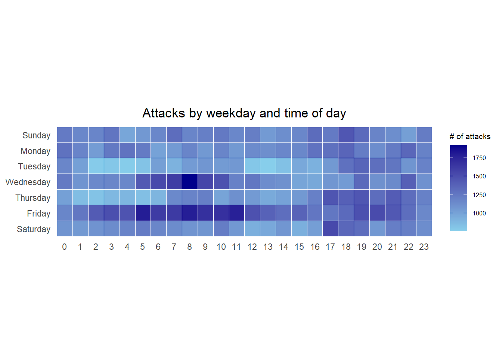
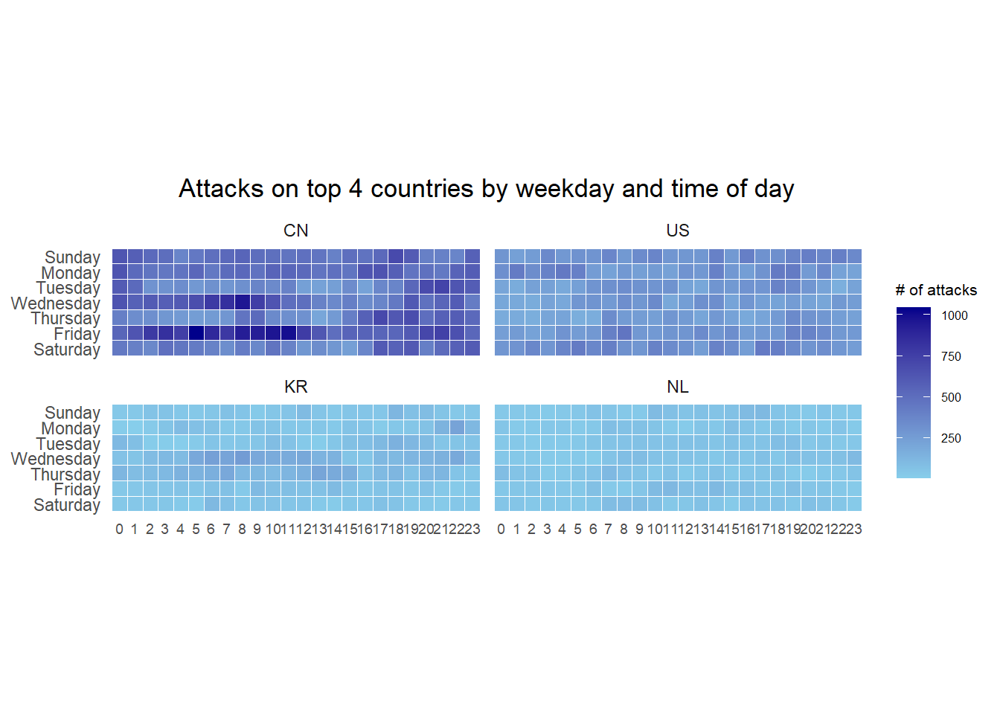
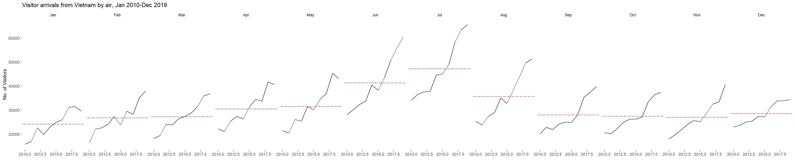

Hands-on Exercise 7 Visualising and Analysing Time-oriented Data
Author
Ha Duc Tien
Published
May 30, 2024
Modified
June 4, 2024
1. Overview
By the end of this hands-on exercise you will be able create the followings data visualisation by using R packages:
plotting a calender heatmap by using ggplot2 functions,
plotting a cycle plot by using ggplot2 function,
plotting a slopegraph
plotting a horizon chart
2. Getting started
2.1 Installing and launching R packages
Write a code chunk to check, install and launch the following R packages: scales, viridis, lubridate, ggthemes, gridExtra, readxl, knitr, data.table and tidyverse.
package 'rootSolve' successfully unpacked and MD5 sums checked
package 'lmom' successfully unpacked and MD5 sums checked
package 'expm' successfully unpacked and MD5 sums checked
package 'Exact' successfully unpacked and MD5 sums checked
package 'gld' successfully unpacked and MD5 sums checked
package 'productplots' successfully unpacked and MD5 sums checked
package 'libcoin' successfully unpacked and MD5 sums checked
package 'Formula' successfully unpacked and MD5 sums checked
package 'inum' successfully unpacked and MD5 sums checked
package 'effectsize' successfully unpacked and MD5 sums checked
package 'DescTools' successfully unpacked and MD5 sums checked
package 'ggmosaic' successfully unpacked and MD5 sums checked
package 'partykit' successfully unpacked and MD5 sums checked
package 'sjstats' successfully unpacked and MD5 sums checked
package 'CGPfunctions' successfully unpacked and MD5 sums checked
The downloaded binary packages are in
C:\Users\tien_\AppData\Local\Temp\Rtmpqql2MG\downloaded_packages
package 'ggHoriPlot' successfully unpacked and MD5 sums checked
The downloaded binary packages are in
C:\Users\tien_\AppData\Local\Temp\Rtmpqql2MG\downloaded_packages
2.2 The Data
For the purpose of this hands-on exercise, eventlog.csv file will be used. This data file consists of 199,999 rows of time-series cyber attack records by country.
attacks <-read_csv("data/eventlog.csv")
2.3. Examining the data structure
It is always a good practice to examine the imported data frame before further analysis is performed.
kable() can be used to review the structure of the imported data frame.
kable(head(attacks))
timestamp
source_country
tz
2015-03-12 15:59:16
CN
Asia/Shanghai
2015-03-12 16:00:48
FR
Europe/Paris
2015-03-12 16:02:26
CN
Asia/Shanghai
2015-03-12 16:02:38
US
America/Chicago
2015-03-12 16:03:22
CN
Asia/Shanghai
2015-03-12 16:03:45
CN
Asia/Shanghai
There are three columns, namely timestamp, source_country and tz.
timestamp field stores date-time values in POSIXct format.
source_country field stores the source of the attack. It is in ISO 3166-1 alpha-2 country code.
tz field stores time zone of the source IP address.
2.4 Data Preparation
Step 1: Deriving weekday and hour of day fields
Before we can plot the calender heatmap, two new fields namely wkday and hour need to be derived. In this step, we will write a function to perform the task.
Beside extracting the necessary data into attacks data frame, mutate() of dplyr package is used to convert wkday and hour fields into factor so they’ll be ordered when plotting
Table below shows the tidy tibble table after processing.
kable(head(attacks))
tz
source_country
wkday
hour
Africa/Cairo
BG
Saturday
20
Africa/Cairo
TW
Sunday
6
Africa/Cairo
TW
Sunday
8
Africa/Cairo
CN
Sunday
11
Africa/Cairo
US
Sunday
15
Africa/Cairo
CA
Monday
11
3 Plotting Calendar Heatmap
3.1 Building the Calendar Heatmaps
grouped <- attacks %>%count(wkday, hour) %>%ungroup() %>%na.omit()ggplot(grouped, aes(hour, wkday, fill = n)) +geom_tile(color ="white", size =0.1) +theme_tufte(base_family ="Helvetica") +coord_equal() +scale_fill_gradient(name ="# of attacks",low ="sky blue", high ="dark blue") +labs(x =NULL, y =NULL, title ="Attacks by weekday and time of day") +theme(axis.ticks =element_blank(),plot.title =element_text(hjust =0.5),legend.title =element_text(size =8),legend.text =element_text(size =6) )

Things to learn from the code chunk
a tibble data table called grouped is derived by aggregating the attack by wkday and hour fields.
a new field called n is derived by using group_by() and count() functions.
na.omit() is used to exclude missing value.
geom_tile() is used to plot tiles (grids) at each x and y position. color and size arguments are used to specify the border color and line size of the tiles.
theme_tufte() of ggthemes package is used to remove unnecessary chart junk. To learn which visual components of default ggplot2 have been excluded, you are encouraged to comment out this line to examine the default plot.
coord_equal() is used to ensure the plot will have an aspect ratio of 1:1.
scale_fill_gradient() function is used to creates a two colour gradient (low-high).
Then we can simply group the count by hour and wkday and plot it, since we know that we have values for every combination there’s no need to further preprocess the data.
3.2 Building Multiple Calendar Heatmaps
Step 1: Deriving attack by country object
In order to identify the top 4 countries with the highest number of attacks, you are required to do the followings:
In this step, you are required to extract the attack records of the top 4 countries from attacks data frame and save the data in a new tibble data frame (i.e. top4_attacks).
Step 3: Plotting the Multiple Calender Heatmap by using ggplot2 package.
ggplot(top4_attacks, aes(hour, wkday, fill = n)) +geom_tile(color ="white", size =0.1) +theme_tufte(base_family ="Helvetica") +coord_equal() +scale_fill_gradient(name ="# of attacks",low ="sky blue", high ="dark blue") +facet_wrap(~source_country, ncol =2) +labs(x =NULL, y =NULL, title ="Attacks on top 4 countries by weekday and time of day") +theme(axis.ticks =element_blank(),axis.text.x =element_text(size =7),plot.title =element_text(hjust =0.5),legend.title =element_text(size =8),legend.text =element_text(size =6) )

4. Plotting Cycle Plot
In this section, you will learn how to plot a cycle plot showing the time-series patterns and trend of visitor arrivals from Vietnam programmatically by using ggplot2 functions.
4.1 Data Import
For the purpose of this hands-on exercise, arrivals_by_air.xlsx will be used.
The code chunk below imports arrivals_by_air.xlsx by using read_excel() of readxl package and save it as a tibble data frame called air.
air <-read_excel("data/arrivals_by_air.xlsx")
4.2 Deriving month and year fields
Next, two new fields called month and year are derived from Month-Year field.
ggplot() +geom_line(data=Vietnam,aes(x=year, y=`Vietnam`, group=month), colour="black") +geom_hline(aes(yintercept=avgvalue), data=hline.data, linetype=6, colour="red", size=0.5) +facet_grid(~month) +labs(axis.text.x =element_blank(),title ="Visitor arrivals from Vietnam by air, Jan 2010-Dec 2019") +xlab("") +ylab("No. of Visitors") +theme_tufte(base_family ="Helvetica")

5. Plotting Slopegraph
In this section you will learn how to plot a slopegraph by using R.
Before getting start, make sure that CGPfunctions has been installed and loaded onto R environment. Then, refer to Using newggslopegraph to learn more about the function. Lastly, read more about newggslopegraph() and its arguments.
5.1 Data Import
Import the rice data set into R environment by using the code chunk below.
rice <-read_csv("data/rice.csv")
5.2 Plotting the slopegraph
Next, code chunk below will be used to plot a basic slopegraph as shown below.
rice %>%mutate(Year =factor(Year)) %>%filter(Year %in%c(1961, 1980)) %>%newggslopegraph(Year, Yield, Country,Title ="Rice Yield of Top 11 Asian Counties",SubTitle ="1961-1980",Caption ="Prepared by: Dr. Kam Tin Seong")